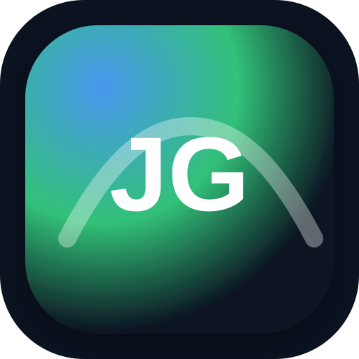

All services
Official links + one-tap actions for everyday life in Jersey.
Loading…
JerseyGo is an unofficial directory that links to official/public sources (Gov.je, LibertyBus, Ports of Jersey, Jersey Airport).

Official links + one-tap actions for everyday life in Jersey.